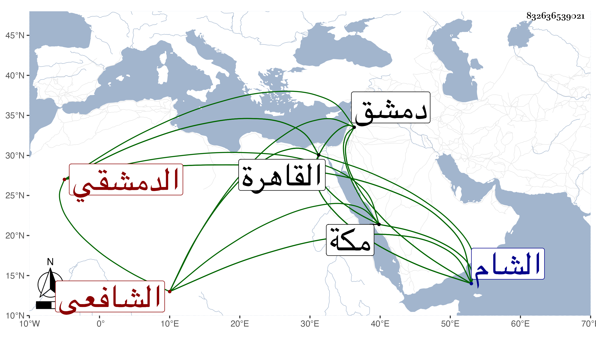

0902Sakhawi.DawLamic.ITO20230111-ara1.EIS1600.832636539021
Biography ID: 832636539021
103
أبو بكر بن عبد الله بن عبد الرحمن بن محمد بن محمد التقي الدمشقي الشافعي أخو النجم محمد وعبد الرحمن الماضيين وهو الأصغر ويعرف كسلفه بابن قاضي عجلون . ولد في شعبان سنة إحدى وأربعين وثمانمائة بدمشق ونشأ بها فحفظ القرآن والعمدة والمنهاج وجمع الجوامع والكافية وتصريف العزى والخزرجية والأندلسية وغيرها وعرض على جماعة كالتقي الأذرعي والبلاطنسي وغيرهما وأخذ الفقه عن أبيه وخطاب والنحو الصرف والمعاني والبيان عن الشرواني وقدم القاهرة في سنة ستين فأخذ قليلا عن المحلى والعلم البلقيني وطائفة وسمع من العلاء ابن بردس وغيره وتميز في الفقه وشارك في غيره وكل انتفاعه إنما هو بأخيه ودرس في حياته وبعده في أماكن كثيرة وصار بعد انقراض تلك الحلبة رئيس الشام والمشار إليه فيه بالإفتاء وكثرة الجهات جدا وبلغني أن تداريسه بالشامية كانت فائقة وبذل نفسه مع من يقصده سيما فيما فيه إزالة منكر ونحوه بمساعدة المحب ابن أخي الحصني ونحوه وحج هو وأخوه الزين في سنة ست وستين وتكرر قدومه القاهرة منها في سنة سبع وسبعين بعد موت أخيه ثم في آخر سنة ثمان وثمانين مطلوبا لإرسال نائب الشام بالتشكي من معارضته ولابن الصابوني فيه شائبة عمل فألزم بالإقامة بعد هدية وكلفة وتصدي للإقراء بالأزهر وغيره وانتفع به جماعة وأثنوا على استحضاره وملكته في الفقه وجودة تقريره مع قوة نفسه ومزيد صفائه مما كان سببا لمجيئه وكذا قدم في سنة ثلاث وتسعين مطلو بالشخص يقال له العمري عارضه في بدعة ونحوها وعقدت بينهما مجالس بحضرة السلطان وغيره ولم ينهض الخصم بطائل فتكلف هذا ورجع إلى بلده فلم أطرافه بعد أن رغب عن كثير من وظائفه وجهاته ومن ذلك الثلث من الشامية البرانية فإنها كانت معه برغبة النجم يحيى بن حجي وتوجه لمكة من البحر فوصلها في رمضان سنة خمس وتسعين ولم يوقع بها تدريسا واعتذر باشتغاله بالعبادة ودام حتى حج ثم رجع صحبة الركب الشامي وما كان غرضه إلا الإقامة ليحرر كتاب أخيه المسمى بالتحرير ولكن قيل أنه لم يستطع الحر ولما كان البقاعي عندهم أنكر عليه أشياء بحيث زادت النفرة بينهما وبالجملة فله قومات وهمات بدون دربة وبلغني أنه أفرد زوايد البهجة وأصلها والتنبيه على المنهاج في مجلد لطيف سماه إعلام النبيه بما زاد على البهجة وأصلها والتنبيه وأنه كتب على تصحيح أخيه توضيحا وعمل منسكا لطيفا وتصحيحا على الغاية في كراسة وآخر أبسط منه وغير ذلك كإفراد زوائد كل من الكافية والألفية على الآخر لم يبيض وله نظم فمنه ملغزا
| ما متلف ببعض شيء قد سقط | يضمن لا بالكل بل نصف فقط مجيبا عنه |
| ذا الشيء ميزاب ففي سقوطه | نصف فقط والكل في خارجه |
ومنه في لغات الاسم
| إسم وأسم وسمى مثلثا | ومثله سمى قد نقلا |
وفي لغات الفم
| بتثليث فافم بنقص وتضعيف | وقصر كذاك الاتباع محكى |
وكنت ممن اجتمع به حين قدومه للسلام عليه وكتبت من نظمه مع ما هنا ما أثبته في الكبير .
